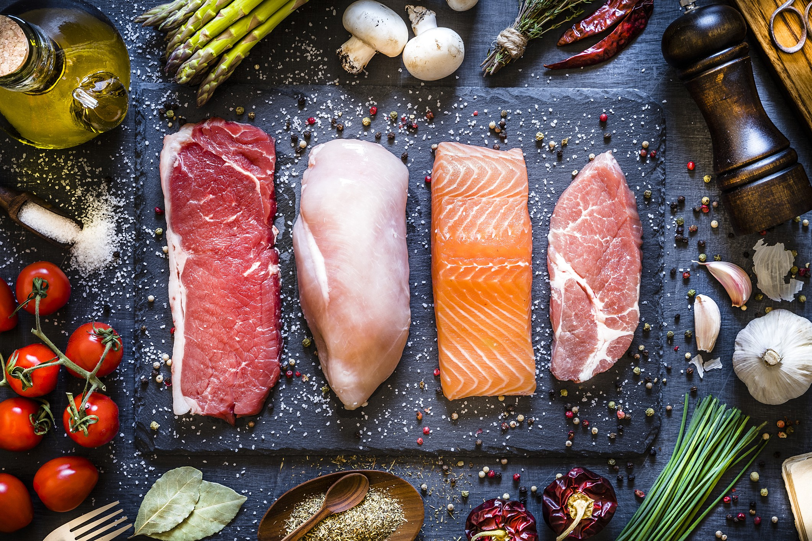

Qual a importância da alimentação correta?
Um cardápio balanceado ajuda o sistema imunológico; melhora o humor e a memória; reduz o cansaço e o estresse; aumenta a qualidade do sono; previne o envelhecimento precoce da pele; melhora o sistema digestivo; e fornece disposição e mais energia para as atividades diárias.
Peso ideal
O peso ideal é o peso que uma pessoa deve ter para a sua altura, sendo considerado um intervalo de peso saudável e que permite reduzir acentuadamente o risco de diversos problemas de saúde, como obesidade, hipertensão e diabetes ou até mesmo a desnutrição.


Autoria: Jeniffer R. Dos Santos; Laura Giovana Oliveira Dias
Seja Saudável ;)
- Durma de 6 a 8 horas por dia. Dormir de 6 a 8 horas por dia é muito importante para que o corpo descanse e reponha as energias necessárias.
- Alimente-se bem.
- Evite refrigerantes e bebidas alcoólicas.
- Pratique atividades físicas.
- Realize check-ups periodicamente.